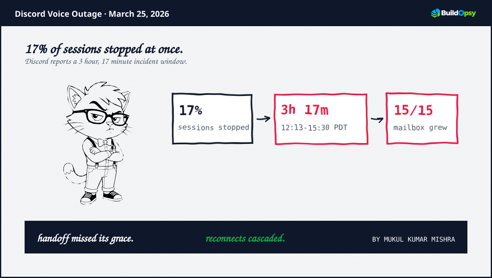
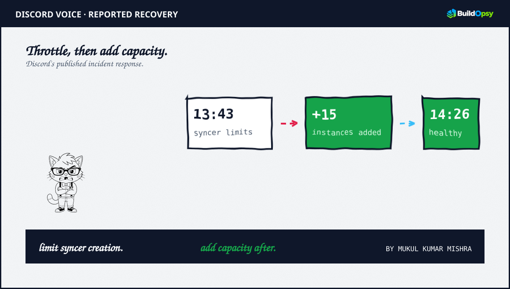

1. Session Handoff Outlasted Kubernetes' Grace Period
Discord's April 29 incident postmortem says the incident began during a Kubernetes migration for Elixir services. The team reduced pod count while increasing pod resources. When the change reached the first zone at 12:13 PDT on March 25, Kubernetes terminated half the pods there. A safety check designed to wait for in-progress work kept handoff from starting before the termination grace period expired.
Discord says the sessions service ran across three equally balanced zones and 17% of sessions across the platform stopped ungracefully. That exact 17% is the company's reported figure. The postmortem attributes it to pod termination and incomplete handoff, not to clients violating a retry contract.
2. Reconnect Work Reached Gateways and Voice Syncers
Discord says the disconnected sessions triggered monitor messages across its real-time systems and sent clients into reconnect. Gateway memory rose in us-east1-b, where affected sessions were concentrated. The same reconnect wave propagated to the A/V service as clients rejoined voice calls.
The postmortem says mailbox lengths began growing on all 15 voice syncer instances at 12:13 PDT, while RPCs to Discord's SFUs fell. The connection-pool and HTTP-connection supervisors were also on paths used by service discovery. When their mailboxes backed up, health announcements to etcd could be delayed and instances could leave the service ring. Discord describes a cascading bottleneck; it does not report that 14 of 15 instances simply “went down.”
The company's incident window is 12:13–15:30 PDT, or 3 hours and 17 minutes. That is the reported voice/video degradation window, not a measured period in which every call or every Discord service was unavailable.
3. The RPS Model
Discord did not publish a request-rate or cost measurement for this incident. To illustrate how a reconnect window can shape load, assume 8 million concurrent sessions, use Discord's reported 17% interruption rate, count three modeled work units per affected session, and spread them over an assumed 45-second reconnect window: 8,000,000 × 0.17 × 3 ÷ 45 ≈ 90,700 work units/second.
Add an assumed 45,000 presence-replay work units/second and a modeled 12,000 work units/second baseline: 90,700 + 45,000 + 12,000 ≈ 147,700, or about 148,000 modeled work units/second during that window. Only the 17% interruption figure is reported by Discord; the concurrent-session count, work per session, replay rate, baseline, and window are scenario inputs. These work units are not Discord's telemetry.
Discord's postmortem describes multiple recovery attempts before rate limits and added capacity stabilized the service. Repeated restarts can recreate work and must be evaluated against the backlog they produce, not just the number of healthy processes they bring back.
| Workload | Scenario | Modeled RPS |
|---|---|---|
| Baseline work | Assumed for the model | 12k/s |
| Reconnect work | 8M × 17% × 3 ÷ 45 sec | ~90.7k/s |
| Presence replay | Assumed for the model | 45k/s |
| Modeled total | baseline + reconnect + presence | ~147.7k/s |

4. The Fixes Discord Reports
Discord says it added a validating admission webhook for its Elixir workloads. The webhook rejects a scale-down until the affected pods have drained their entities and handed off their state. This checks the safety condition before Kubernetes starts the termination grace period.
For the voice-syncer bottleneck, Discord says it replaced a single connection-pool supervisor with partitioned supervisors, moved the gun connection lifecycle into the pool, and added or tuned rate limits on upstream syncer creation and endpoint selection. During recovery, rate limits were applied first; 15 additional instances were then brought online. Discord says the full cluster was healthy by 14:26 PDT, with the incident window ending at 15:30 PDT.
For another stateful service, measure drain completion before scale-down, keep a reconnect budget below the capacity of the recovering service, and test that recovery work does not overwhelm health reporting or service discovery.
5. Estimate Recovery Cost from Your Own Workload
Discord's postmortem does not publish a per-request cost or a dollar estimate for this incident, so this article does not assign one. For a service you operate, a simple model is: reconnect work units × unit cost × recovery duration + temporary capacity held during recovery. Record each input from your own traffic and rate card.
For the scenario above, the reconnect-work estimate is about 90,700 work units per second under the stated assumptions. Multiply that rate by the measured cost per work unit and actual burst duration to estimate processing cost. Add the cost of extra capacity separately. Do not treat this modeled rate as Discord telemetry or the result as Discord's bill.
6. The Verdict
Discord's postmortem establishes the trigger and the cascade: scale-down began before state handoff completed, 17% of sessions stopped, and reconnect work reached the gateway and voice systems. It reports that all 15 voice syncers developed growing mailboxes, while the exact request-rate scenario in this article remains modeled from declared inputs.
The company reports concrete changes to drain validation, connection-pool concurrency, rate limits, and capacity. Other services can apply the same constraints by checking that pods are drained before scale-down and by limiting recovery traffic to what downstream systems can process.
The herd was not misbehavior. The herd was the design on its worst day.
Sources and Method
Incident mechanism, 17% session impact, timeline, mailbox growth across 15 voice syncers, and recovery measures are attributed to Discord Engineering's April 29, 2026 postmortem. The load scenario uses explicit assumed inputs and is not Discord telemetry. No dollar impact is estimated.